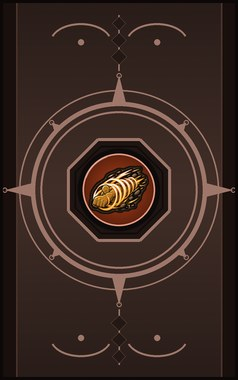
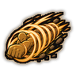

Sotsuji Shindou (Sudden Impact) D
A blow that knocks one enemy away.
| Rank | Chakra | Cooldown | Class level |
|---|---|---|---|
| D | 8 | 10 s | 2 |

Technique trees › Universal taijutsu
5 techniques · Taijutsu tab
Unlocks through World of Naruto's own trees, a gene, a build choice or a profession.
A blow that knocks one enemy away.
| Rank | Chakra | Cooldown | Class level |
|---|---|---|---|
| D | 8 | 10 s | 2 |
Kick one enemy up and drive them back down in a string of blows.
| Rank | Chakra | Cooldown | Class level |
|---|---|---|---|
| C | 14 | 15 s | 4 |

Fly at a line of enemies spinning like a drill, fist first.
| Rank | Chakra | Cooldown | Class level |
|---|---|---|---|
| C | 14 | 15 s | 6 |
Spin one enemy upside down and slam them into the ground.
| Rank | Chakra | Cooldown | Class level |
|---|---|---|---|
| B | 24 | 25 s | 9 |
A flow of elbows that rattles one enemy senseless.
| Rank | Chakra | Cooldown | Class level |
|---|---|---|---|
| B | 24 | 25 s | 11 |